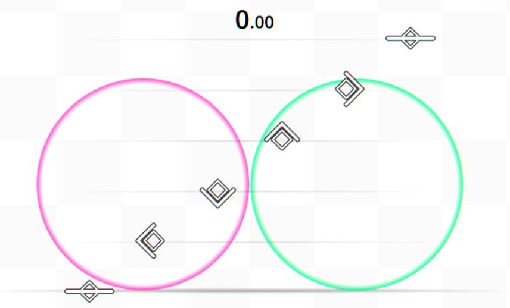
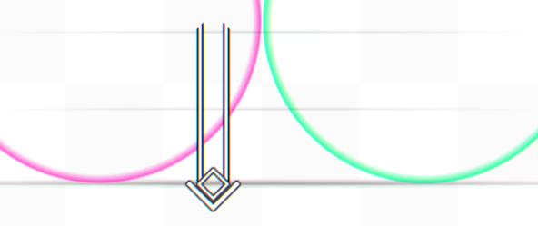
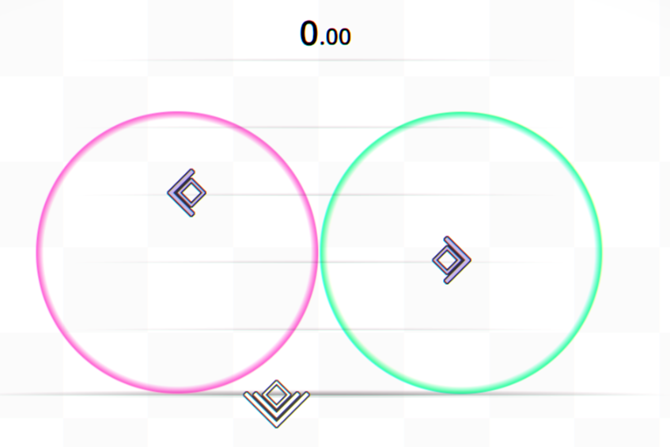
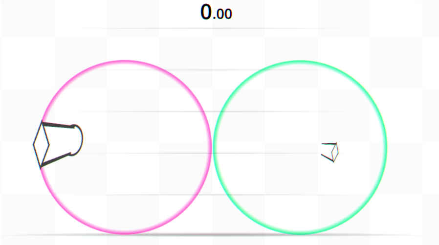
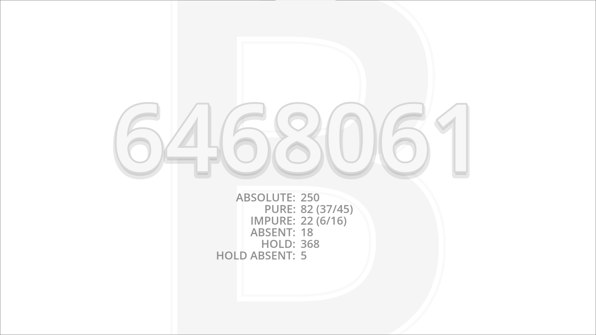
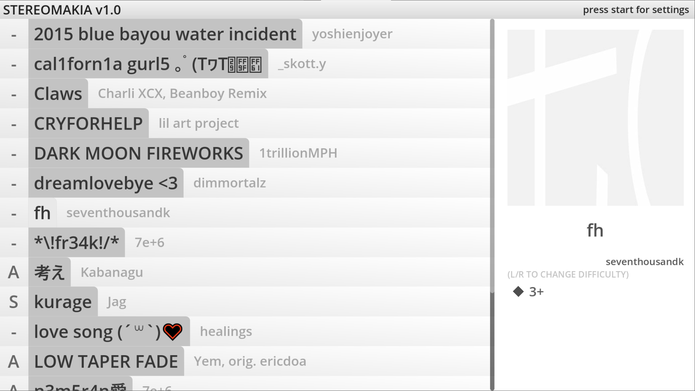
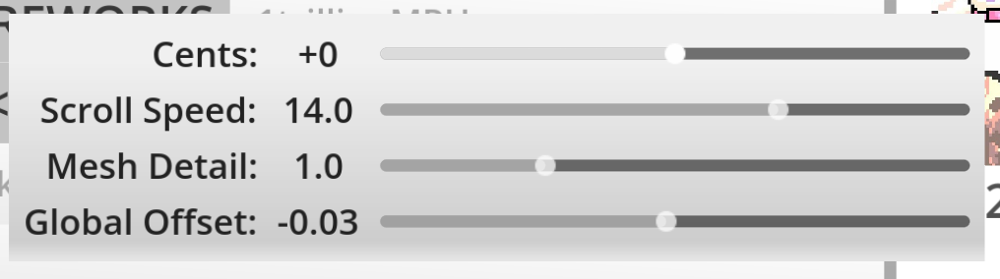

Yahallo! Thank you for downloading STEREOMAKIA! I don't feel like putting a tutorial chart in the game so it's here instead ;p
STEREOMAKIA was originally conceived to play like O.N.G.E.K.I., but on hardware you'd find at home—this somehow ended up feeling more like an alternate-universe Sound Voltex.
There are six vertical scroll lanes and two circlular joystick lanes.

The two outer lanes with the flat line notes are mapped to the left and right bumpers respectively.
I took this from O.N.G.E.K.I. originally, but this is also exactly what Project Diva does. I just use icons that are intutive instead of SONY branded (yea I am still annoyed by this in {current-year}). Anyway, they're also arranged in DDR order, and incidentally, playing DDR-esque by switching 'feet' every note will usually feel natural.The four inner lanes are where things get interesting: The four directionals can be triggered with either the d-pad or the corresponding face button (e.g. up = ps4 Δ / xbox y).
Hold polling may change to tempo-synced in the future, this way is kinda lame and also can mess with scoring slightly.Vertical notes can also be held. All holds are polled ten times a second, regardless of song tempo. Release timing is never graded on vertical holds. Lastly, because there are two inputs for every lane, it's possible to hit a note while also holding the same note on the other side of the controller.

Vertical notes will sometimes be doubled, requiring you to press the note on both sides. This is indicated by doubling the directional line. However, even holds that follow doubled notes only ever need to be held singly.
Vertical notes can also be 'absolute', coloring them lavender. This plays a nice sound if you can hit them within the absolute grade window but has no actual effect on gameplay or scoring.

◯◯
Notes in the circular lane will approach you, and are meant to be hit as they intersect the ring they inhabit. The left 'lane' corresponds to the left stick, and the right the right.
They can be held as well, this requires tracking along the hold as it moves. Release timing is not graded on circular notes by default, but if there's a ovoid note at the end of the hold, it is.

A circle note needs to be hit in-time from the joystick's neutral position. This means that you can't just rotate over as it appears, nor just hold in the indicated direction as it passes through, you need to actively flick the stick on time. This may be unintuitive at first but makes more gameplay sense once you get used to it, i pwommy.
The window for circle notes is a lot more forgiving than it is for vertical notes. That is, if you hit it within the scoring window at all you get an absolute.
You can ignore this entire section if you're just starting out. It might be useful to understand as you improve, though.
The target numerical score on any level is 7000000. Individual note value is scaled chart-by-chart so that this target is maintained. Scores are letter-based, S being above 7000000 and then following alphabetical order from there. A full combo rewards a + alongside whatever letter you recieved.
I don't want to go on a tangent but I really like the framework they settled on, it's pretty beginner friendly w/o being too baby for stronger players. imo a number of game scoring systems are too complicated and don't really add anything. It's not an interpolated curve either, I dont think Godot's input methods are even accurate enough to accurately report that.Much of scoring is similar to as in GekiChuMai. The four grades for individual notes are absolute, pure, impure, absent, each accounting for 0.03s (two 60fps frames), split into 0.016s (one frame) in each direction. impure and absent break your combo. Right now it's impossible to get an absent grade early—it only triggers if you miss the note completely. If that was confusing, see the chart below:
| Grade | Early impure | Early pure | absolute | Late pure | Late impure | absent |
|---|---|---|---|---|---|---|
| Window (frames) | [-3, -2) | [-2, -1) | [-1, 1] | (1, 2] | (2, 3] | >3 |
| Window (seconds) | [-0.05, -0.03) | [-0.03, -0.016) | [-0.016, 0.016] | (0.016, 0.03] | (0.03, 0.05] | >0.05 |
| Score Awarded | 50% val | 90% val | 100% val | 90% val | 50% val | -50% val |
Holds award 10% of a full note 10 times a second. This is accounted for when calculating score totals.
If that was also confusing, feel free to stop caring and just hit the notes on time :p

The scoring screen tells you how many of each grade you recieved over a chart. The numbers in parentheses are how many notes you hit early and late respectively. If your accuracy is low and you see that your pures and impures are heavily weighted in one direction, you may need to adjust your offset from the song select settings screen.

Press up or down on the d-pad to select a track, then left and right to select a difficulty. Many songs only feature 1 difficulty at the moment.
You can press select to toggle sort between song-phonetic-name-alphabetical and artist-lowercase-name-unicode order.
Press start on the song select screen to open the settings menu.

I am this annoying in real life too.Cents is the playback speed multiplier, in cents.
This might change in the future but it's kind of a choice overload imo.Scroll Speed affects both the speed of the vertical lanes and the circular lanes. They cannot at this time be adjusted seperately.
Circle lane holds are remeshed every frame. This is not that expensive in theory but some computers don't like doing it. If you're struggling with frame drops consider turning the Mesh Detail down—right now STEREOMAKIA doesn't handle them very well so it's best to avoid them entirely. Low settings will look dopey but don't affect gameplay any.
Global Offset is the offset applied to your input when scoring notes. The default value of -0.03 works well on both the computers I tested on but YMMV.
Thanks again for playing! Depending on the dot product of reception and personal interest I may release a v2 with some combination of more charts, a feature-complete editor, chart theming similar to how soundodger does it, etc.
I don't want your money for this, not yet at least, but if playing this really got you into a spending mood I encourage you to donate to or otherwise spend money on an artist in the game, a small artist you like, or a charity. Bonus points for queers but it's your money.
Remember, trans rights are human rights !!!
~7tk of nanahyakuman